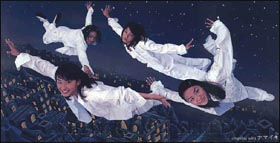
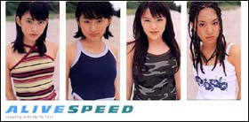
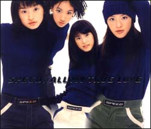
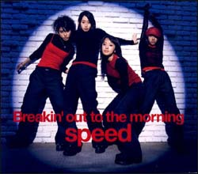
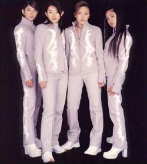

|
|
S
P E E D |
|
|
|
H I S
T O R Y |
|
|
93
95
96
97
98
99
2000
|
12
4
7
8
10
11
12
1
2
3
4
5
8
10
12
2
3
4
7
8
10
11
12
1
2
3
4
5
6
7
8
9
10
11
12
1
2
3
4
6
7
8
|
현 멤버 4명이 선발 되어 그룹 결정
그룹 이름 SPeeD 결정
伊秩弘將」씨와의 만남
Body&Soul 비디오 촬영
1집 싱글 Body&Soul 발매
도쿄에서 합숙 생활 시작
2집 싱글 STEADY 발매
"제 29회 일본 유선 대상" 신인상
"제 38회 일본 레코드 대상" 신인상
첫번째 사진집SPEED 촬영
Go!Go!Heaven 비디오 촬영
"제 34 회 골든 아로 상" 음악 신인상
"제 11회 일본 골드 디스크 대상" BEST5 NEW ARTIST상
3집 싱글 Go!Go!Heaven 발매
공식 펑크 러브 SPEED SPIRITS 설립
첫번째 사진집 SPEED 발매
1집 앨범 Starting Over 발매
4집 싱글 Wake Me Up! 발매
5집 싱글 White Love 발매
SPEED NET FANCLUB 개설
"제 39회 일본 레코드 대상" 우수 작품상
6집 싱글 My Graduation 발매
2집 비디오☞SPEED SPIRITS 발매
2집 앨범 RISE 발매
7집 싱글 ALIVE 발매
안드로메디아 O.S.T 발매
SPEED // TOUR RISE 나고야 돔 개최
SPEED // TOUR RISE 그린 돔 마에바시 개최
SPEED // TOUR RISE 오사카 돔 개최
SPEED // TOUR RISE 후쿠오카 돔 개최
SPEED // TOUR RISE 도쿄 돔 개최
8집 싱글 All my true love 발매
두번째 사진집 SPEED YES,LOVE！ 발매
BEST ALBUM MOMENT 발매
"제 40회 일본 레코드 대상" 우수 작품상 수상
후쿠시마 콘서트/ 빅파레트
오키나와 개선 콘서트/ 오키나와 컨벤션 센터
SPEED // TOUR RISE IN TOKYO DOME 비디오 발매
9집 싱글 Single Precious Time 발매
타카코 솔로 1집 싱글 My first love 발매
L×I×V×E 방송개시
蘇る金狼 방송개시
10집 싱글 Breakin' out to the morning 발매
히토에 솔로 1집 싱글 INORI 발매
SPEED // TOUR 1999 REAL LIFE 공연 시작
LxIxVxE VHS 발매
히로코 솔로 1집 싱글 AS TIME GOES BY 발매
에리코 16번째 생일 맞이
REAL LIFE 콘서트 마감
다카코 솔로 2집 싱글 Come close to me 발매
2000년 3월 31일 해체 선언
스피드 전곡집 발매
11집 싱글 Long Way Home 발매
NHK Hi-vision CM 출연
나고야 돔을 시작으로 돔투어 시작
스피드 3집 앨범 Carry On my way 발매
스피드 1999 돔투어 콘서트 끝맺음
마지막 스테이지 홍백가합전 장식
히로코, 티세라 CM 출연
히로 2nd 싱글 Bright Daylight 발매
SPEED FINAL DOME TOUR Real Life 발매
다카, 에리 각각 식품 CM 출연
에리코 싱글 Red Beat of My Life 발매
스피드 공식 해체.... 3월 31일.........
스피드 솔로 활동 스타트!!... 4월 1일.....
다카코 3rd 싱글 my greatest memories 발매
세계로 향한 스피드 재결성!!
다카코 first 앨범 first wing 발매
에리코 위드 크런치 2nd 싱글 Luv is Magic 발매
|
|
|
M E M
B E R |
| |
Hiroko Shimabukuro
생년월일 April 7, 1984
출생지 OKINAWA,Japan
성좌
양자리
혈액형
A형
신장 161cm
|
| |
Hitoe Arakaki
생년월일 April 7, 1981
출생지 OKINAWA,Japan
성좌
황소 자리
혈액형 AB형
신장
154cm
|
| |
Takako Uehara
생년월일 January14,1983
출생지 OKINAWA,Japan
성좌 산양자리
혈액형 A형
신장
158cm
|
| |
Eriko Imai
생년월일 September 22,1983
출생지 OKINAWA in Japan
성좌 처녀자리
혈액형 O형
신장
158cm
|
|
S I N
G L E S |
|
|
|
1st BODY & SOUL
Body & SOUL stream |
2nd STEADY
Steady stream |
|
|
|
↑
3rd GO!GO!HEAVEN
GO!GO!HEAVEN stream
4th Wake Me
Up!
→
Wake Me Up! stream |
|
 |
|
|
5th White Love
White Love stream |
6th my graduation
my graduation stream |
 |
 |
|
7th ALIVE
alive stream |
8th ALL MY TURE LOVE
all my ture love stream |
|
 |
|
9th Precious Time
precious time stream |
10th Breakin' out to the mrning
breakin' out to the morning stream |
 |
|
11th
LONG WAY HOME
long way home stream |
|
|
|
|
M U S
I C V I D E O |
|
|
|
|